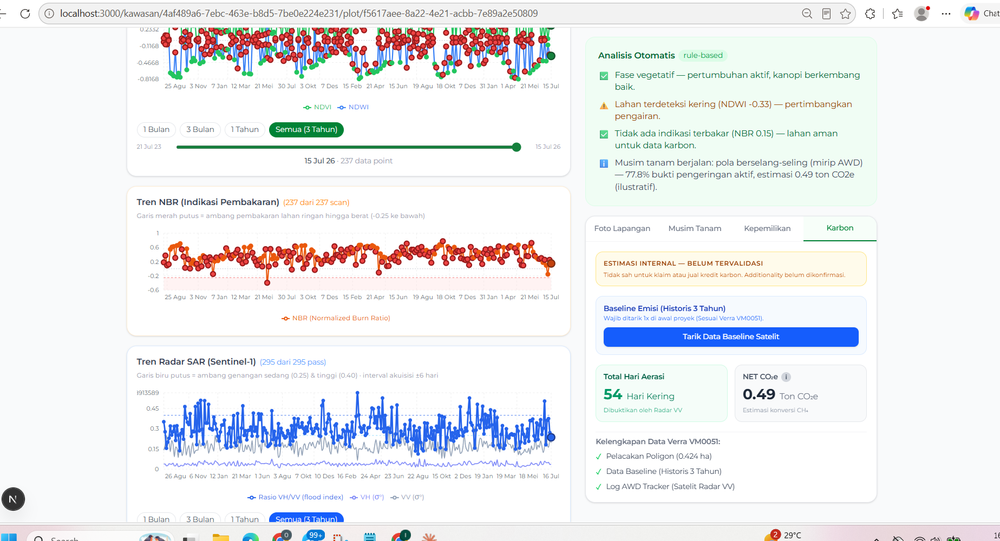

1. Introduction & Problem Statement
Paddy rice cultivation is one of the largest sources of greenhouse gas (GHG) emissions in Southeast Asia. The anaerobic (oxygen-deprived) conditions in continuously flooded rice paddies create an ideal environment for methanogenic bacteria to produce Methane gas (CH4) in massive quantities through the decomposition of organic matter in waterlogged soil. Methane is estimated to have a Global Warming Potential (GWP) of approximately 27 times that of CO2 over a 100-year cycle (IPCC AR6, 2021).
In Indonesia, the rice farming sector contributes approximately 10–12% of total national GHG emissions. Traditional farmers in Bali — particularly members of the traditional Subak irrigation system — lack access to affordable, user-friendly MRV (Measurement, Reporting, and Verification) tools that meet international carbon verification standards.
AgriMRV is a dMRV (digital Measurement, Reporting, and Verification) platform built on publicly available satellite data from the European Space Agency (ESA). It is designed to monitor, report, and verify organic, environmentally-friendly rice farming practices automatically, transparently, and in a manner auditable by any third party — without relying on unilateral farmer claims.
1.1 Purpose and Objectives
- Detect and verify the implementation of AWD (Alternate Wetting and Drying) — a water management technique proven to reduce methane emissions by 30–50%.
- Monitor compliance with Zero Burn protocols — prohibiting the burning of rice straw residue, which releases Black Carbon and massive CO2.
- Verify the success of Organic Farming — without synthetic chemical fertilizers — through satellite-based plant health indices.
- Establish a 3-Year Historical Baseline as proof of Additionality required by Verra VM0051.
- Produce scientifically valid evidence for the issuance of honest, tamper-proof, and auditable carbon credits.
2. Dual-Sensor Satellite Architecture
AgriMRV employs a multi-sensor approach using the Copernicus satellite constellation operated by ESA/European Union. All data is publicly available and can be independently verified by any party through dataspace.copernicus.eu.
2.1 Sentinel-2 (Optical Multispectral Satellite)
Technical Specifications: 10–20m spatial resolution, 13 spectral bands (400–2400nm), 5-day revisit time per location, cloud cover automatically recorded via SCL (Scene Classification Layer).
Primary Function: High-precision surface reflectance measurement to compute NDVI, NDWI, and NBR indices.
2.2 Sentinel-1 (SAR Radar Satellite — System Backbone)
Technical Specifications: C-band SAR (Synthetic Aperture Radar), 5.6 cm wavelength, VV and VH polarizations, ±6-day revisit time, day/night capable.
Absolute Advantage: The 5.6 cm microwave wavelength is thousands of times larger than cloud particles (2–200 μm), meaning it completely penetrates thick clouds, heavy rain, and fog. This makes Sentinel-1 the only sensor that can be reliably used for year-round paddy field monitoring in a tropical climate.
2.3 Automatic Fallback System (Sensor Selection Logic)
3. Five Satellite Parameters — Formulas, Thresholds & Carbon Relevance
3.1 NDVI — Normalized Difference Vegetation Index
Scientific source: Rouse et al. (1974). Journal of Remote Sensing of Environment.
Why NIR and Red? Healthy rice leaves have mesophyll cells with a sponge-like structure that strongly reflects NIR (high B08) while absorbing red light for photosynthesis (low B04). Result: NDVI = (High − Low)/(High + Low) = positive approaching +1. Bare soil or dead plants lack active cell structures → values approach 0 or go negative.
| NDVI Value | Field Condition | Carbon Status |
|---|---|---|
| < 0.1 | Bare soil / fallow / post-harvest | Neutral |
| 0.1 – 0.3 | Seedling stage (young plants) | Early growth |
| 0.3 – 0.5 | Active vegetative stage ← Field data: 0.315 | Active carbon sequestration |
| 0.5 – 0.7 | Generative stage (peak greenness) | Peak carbon sequestration |
| > 0.7 | Very dense canopy | Maximum carbon sequestration |
3.2 NDWI — Normalized Difference Water Index
Scientific source: McFeeters, S.K. (1996). International Journal of Remote Sensing.
Why Green and NIR? Water has a unique physical property: it absorbs NIR wavelengths almost completely (B08 near zero above water bodies) while still reflecting a small amount of green light (B03 positive small). Result: (Small − Zero) = positive → water detected. When land is dry, leaves strongly reflect NIR → B08 high → NDWI goes negative.
| NDWI Value | Field Condition | AWD Calculation |
|---|---|---|
| > +0.3 | Full flooding | No aeration days |
| 0.0 – 0.3 | Shallow flooding / wet soil | No aeration days |
| -0.1 – 0.0 | Transition zone | Threshold boundary |
| -0.1 to -0.4 | DRY — AWD Aeration active ← Field data: -0.329 | Aeration days counted ✓ |
| < -0.4 | Extreme dry / harvest phase | Aeration days counted ✓ |
3.3 NBR — Normalized Burn Ratio
Scientific source: Key, C.H. & Benson, N.C. (2006). USDA Forest Service General Technical Report.
Why NIR and SWIR2? Healthy vegetation contains water in cell tissue that strongly absorbs SWIR (low B12) while reflecting NIR strongly → positive NBR. Conversely, charcoal and ash from burning events have 0% water content, causing SWIR to strongly reflect back from ash (high B12) → NBR drops deeply negative. The more negative the NBR value, the more severe the burning event.
| NBR Value | Field Condition | Status |
|---|---|---|
| > 0.4 | Very healthy vegetation | ✓ Very Safe |
| 0.1 – 0.4 | Normal vegetation ← Field data: 0.148 | ✓ Safe (Zero Burn) |
| -0.1 – 0.1 | Bare soil / post-harvest | Safe |
| -0.25 – -0.1 | ⚠️ Light burn indication | Warning |
| < -0.25 | 🔴 Moderate to severe burn detected | Violation! |
3.4 Radar VV — Vertical-Vertical Backscatter (AWD Detection Backbone)
Source: ESA Sentinel-1 SAR Technical Guide. Polarimetric backscatter coefficient σ°VV (sigma-nought).
Why is VV sensitive to flooding? A calm water surface acts like a specular mirror for VV waves → signal reflects away from the satellite → low σ°VV. Conversely, rough dry soil scatters the signal in multiple directions (volume scattering) → most returns to the satellite antenna → high σ°VV.
3.5 Radar VH/VV — Composite Flood Index
4. Core Algorithm: Hysteresis & Aeration Day Quantification
AgriMRV does not merely record satellite index values. It applies a Hysteresis algorithm to ensure every Aeration Day counted genuinely reflects sustained real-world field conditions — not momentary anomalies.
5. Carbon Credit Calculation (Verra VM0051 / IPCC Tier 2)
5.1 Verra VM0051 Methodology
AgriMRV follows the Verra VM0051 methodology (Adoption of Sustainable Agricultural Land Management), which requires: proof of additionality (demonstrable change from Business-As-Usual practices), a minimum 3-year historical emissions baseline, and quantified project emissions through verified methods.
5.2 Complete Emission Reduction (ER) Formula
5.3 Scientific Basis for Each Variable
| Variable | Value | Scientific Basis |
|---|---|---|
| EF_AWD | 1.22 kg CH4/ha/day | IPCC 2019 Refinement to the 2006 IPCC Guidelines for National GHG Inventories, Vol. 4 Ch. 5 (Cropland) — Tier 1 default for Southeast Asia |
| GWP CH4 | 27 | IPCC AR6 (2021), Working Group I — Global Warming Potential of Methane over 100 years vs CO2 |
| Net-to-gross factor | 0.653 | Cross-climate/soil-type meta-analysis of AWD irrigation effects on CH4 & N2O emissions (~64.5% gross CH4 reduction, ~42.1% net GWP reduction after N2O increase) — a general average, not yet calibrated to Bali-specific soil/climate conditions |
| Baseline Period | 3 Years / 1,095 Days | Verra VM0051 — Minimum 3 years of historical data to prove Business-As-Usual (BAU) flooding practices |
| Land Area | From GPS registration | Measured via GIS polygon with GPS coordinates. Made Sengger field: 0.424 ha |
5.4 Actual Calculation Example — Made Sengger Field
6. System Resilience Architecture (Response to Cloud Cover)
One of the most critical auditor questions is: "How does the system verify field conditions when 100% cloud cover is present?" AgriMRV employs a multi-layered defense system:
| Layer | Mechanism | Guarantee |
|---|---|---|
| Layer 1 | Sentinel-1 Radar penetrates clouds (5.6cm microwave) | Water/flooding data collected 100% unaffected by weather |
| Layer 2 | Growing season time bounds (Planting Date to Actual Harvest) | Aeration days only counted within verified growing period |
| Layer 3 | Cloud windows — 5-day Sentinel-2 revisit cycle | In a 6-month growing season, statistically guaranteed clear-sky periods for NDVI cross-check |
| Layer 4 | Radar VH reflects paddy canopy density | If rice is harvested early or dies, VH drops sharply — anomaly detected |
| Layer 5 | Field photos (geotagged) by farmers/agricultural officers | Physical visual evidence for each growth stage |
Actual data from Made Sengger's field reinforces this: of 34 optical scans in one growing season, 24 scans (70.6%) were cloud-covered. Yet the system successfully collected 294 SAR Radar passes — far richer data, never interrupted by clouds.
7. Visual Evidence — Made Sengger Field, Subak Sangeh, Bali
The nine screenshots below are taken directly from the AgriMRV platform and display real data from the Made Sengger field (0.424 ha, Subak Sangeh, Bali). All data originates from ESA Copernicus public satellites and can be independently verified by any party.


Note: this panel is called "Analisis Otomatis" in the current app (renamed from its earlier Indonesian label). The screenshot above has not yet been refreshed and still shows the old on-screen label "Insight Otomatis" — disclosed here openly rather than left unmentioned, pending a replacement screenshot.



8. System Limitations & Transparency Commitments
AgriMRV is fully committed to the principle of scientific honesty. The following limitations are openly acknowledged:
| Limitation | Impact | Mitigation |
|---|---|---|
| Tier 2 emission factor (1.22 kg CH4/ha/day) is a regional average, not field-specific measurement | Could over/under-estimate by ±30% | Transparency label "Internal Estimate"; planned upgrade to Tier 3 with flux chamber measurement |
| No soil type / soil organic carbon (SOC) variables included | Emission factor may vary between fields | Soil type input field available for future model refinement |
| Piezometer (water level pipe) ground-truthing is still manual, not IoT | Potential delay in field data entry | IoT water level sensor integration planned |
| VV dead zone (0.22–0.28) is not counted | Slight under-counting of aeration days | Conservative approach — benefits report integrity |
| Water-pattern classification thresholds (e.g. the "≥5 transitions" oscillation threshold) are set by domain reasoning on a limited sample — currently 6 planting seasons — not by large-scale statistical calibration | Thresholds may not generalize perfectly to new plots, soil types, or climate patterns until more seasons are analyzed | Documented explicitly in project migration records; scheduled for recalibration as more seasons are added |
| SAR flood_index (VH/VV) interpretation direction — which values mean "flooded" vs. "dry" — has not yet been cross-validated against farmer-confirmed ground-truth wet/dry dates | The wet/dry classification underlying all downstream metrics (aeration days, intentionality, CO2e) rests on an unverified directional assumption | Piezometer ground-truthing (see above) is the planned mechanism to close this gap; not yet completed |
| The 0.653 net-to-gross N2O correction factor is drawn from a general cross-climate/cross-soil-type meta-analysis, not a Bali-specific field study | The NET CO2e figure may not reflect local soil/climate conditions precisely | Flagged in all formula documentation; any official claim requires review by a qualified GHG accountant before use |
9. Invitation for Collaborative Review
Every figure and threshold in this report is an estimate grounded in satellite data and standard scientific methodology — not a substitute for field measurement or formal carbon audit. We actively invite Rikolto and other technical partners to review and challenge this methodology, particularly around field validation and threshold calibration, as part of our ongoing commitment to transparency and continuous improvement.